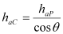
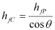

|
|
|


基准齿廓
在“基准齿廓”选项卡中，可以按圆柱齿轮计算的方式输入制造过程的基准齿廓，或直接定义刀具。
在这种情况下，必须按以下方式修改基准齿廓的高度，以计算横向剖面的齿形（见 K. Roth [3]，第 5.2.6 节）：

,
这里，下标 C 表示锥形齿轮（计算值）横向剖面的高度，P 表示基准齿廓的高度（输入值）。你可以通过选择 "Summary / Reference profile / Gears" 在主报告中检查这些值。
Reference profile
In the "Reference profile" tab, you can either input the reference profile for the manufacturing process in the same way as for a cylindrical gear calculation, or define the tools directly.
In this case, you must modify the height in the reference profile as follows to calculate the tooth form in transverse section (see K. Roth [3], section 5.2.6):
,
Here, the subscript C represents the heights in the transverse section of the beveloid gear (calculated values) and P represents the heights of the reference profile (input values). You can check these values in the main report by selecting "Summary / Reference profile / Gears".